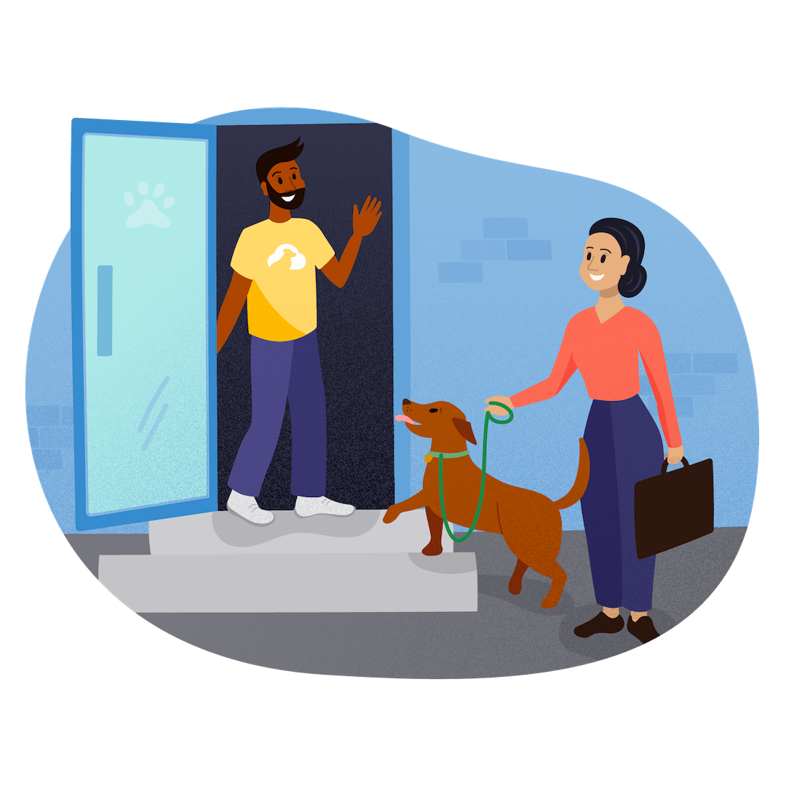

About Our Dog Sitting Service
We are a team of dedicated animal lovers passionate about providing exceptional, reliable, and loving care to your pets. Whether you're away for a few hours or an extended trip, you can rest easy knowing your furry family members are in safe, caring hands.
Our mission is to create a safe and loving environment where pets feel relaxed, happy, and right at home. We believe that every dog deserves personalized attention, gentle care, and plenty of playtime—and we’re here to make that happen!
With years of combined experience in pet care, training, and companionship, we understand that each dog has their own unique personality and needs. That's why we offer tailored services to suit your pet’s routine, behavior, and comfort level.
We treat your pets like our own—because to us, they’re family. 🐾
🶠Our Services
- 🡠In-Home Dog Sitting: We come to your home so your dog can stay in their familiar environment, reducing stress and keeping their routine intact.
- 🐕‍🦺 Dog Walking: Personalized walks—short or long—to give your dog the exercise and adventure they love.
- 🾠Puppy Visits: Potty breaks, feeding, and playtime to help your little one grow up happy and healthy.
- 🛠Bath & Brush: Light grooming to keep your dog fresh, clean, and comfortable.
- 💊 Medication Administration: Gentle care when your dog needs daily medication, whether oral or topical.
- 📷 Daily Updates: We’ll send photos and updates so you can feel close, even while you’re away.